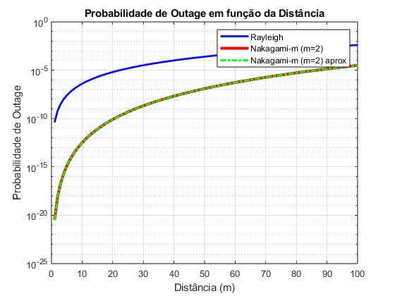
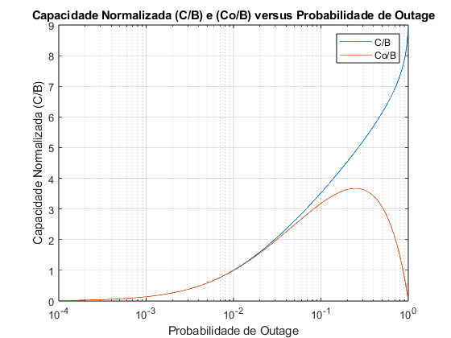
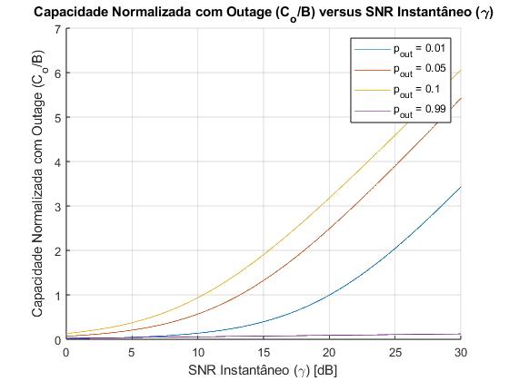

Contents
Questão 1
%{ Seja Pr(d0)=1 mW para d0=1 m, trace a probabilidade de outage em função da distância, para distâncias variando de 1 a 100 metros, supondo modelo log-distância com expoente 4, B=10 MHz, Rb=10 Mbps, N0=−204 dB/Hz, fc=3 GHz, Rayleigh e Nakagami-m com m=2. %} %Tendo a potencia recebida, calcula SNR e depois calcula Probabilidade de outage. % Definições e Parâmetros clc; close all; clear; Pr_d0 = 1e-3; % Potência recebida a d0 (1 mW = 1e-3 W) d0 = 1; % Distância de referência (1 m) B = 10e6; % Largura de banda (10 MHz) Rb = 10e6; % Taxa de bits (10 Mbps) N0_dB = -204; % Densidade espectral de ruído em dB/Hz fc = 3e9; % Frequência de portadora (3 GHz) m = 2; % Parâmetro Nakagami-m % Conversões e cálculos iniciais N0 = 10^(N0_dB / 10); % Conversão de dB/Hz para linear N = N0 * B; % Potência de ruído total distances = 1:100; % Distâncias variando de 1 a 100 metros % Potência recebida (modelo de log-distância com expoente 4) Pr = Pr_d0 * ((d0 ./ distances).^4); % SNR em cada distância SNR = Pr / N; % Limiar de SNR para a taxa de bits desejada (considerando Shannon) SNR_threshold = (2^(Rb / B) - 1); % Probabilidade de outage para Rayleigh P_out_Rayleigh = 1 - exp(-SNR_threshold ./ SNR); % Probabilidade de outage para Nakagami-m usando a função gama incompleta arg = m * SNR_threshold ./ SNR; P_out_Nakagami = gammainc(arg, m, 'lower') / gamma(m); % Aproximação da probabilidade de outage para Nakagami-m P_out_Nakagami_approx = (arg.^m) / gamma(m + 1); % Plotando os resultados figure; semilogy(distances, P_out_Rayleigh, 'b-', 'LineWidth', 2); hold on; semilogy(distances, P_out_Nakagami, 'r-', 'LineWidth', 3); semilogy(distances, P_out_Nakagami_approx, 'g-.', 'LineWidth', 2); hold off; grid on; xlabel('Distância (m)'); ylabel('Probabilidade de Outage'); legend('Rayleigh', 'Nakagami-m (m=2)', 'Nakagami-m (m=2) aprox'); title('Probabilidade de Outage em função da Distância');
Questão 2
%{ A probabilidade de outage varia muito com a parcela de linha de visada (aumento de m). Como seria a outage para o caso do canal AWGN? O canal sem fio em NLOS fica muito distante deste desempenho. Como melhorar o desempenho do canal sem fio neste cenário de canal lento (outage)? %} %Questão 2 - AWGN é Poutage 0, para melhoar ler no livro. clear; disp('A probabilidade de outage no canal AWGN é 0. Em um canal sem ') disp('fio em NLOS é possível melhorar o desempenho, em relação ao ') disp('outage utilizando técnicas de diversidade do canal (MIMO e OFDM).')
A probabilidade de outage no canal AWGN é 0. Em um canal sem fio em NLOS é possível melhorar o desempenho, em relação ao outage utilizando técnicas de diversidade do canal (MIMO e OFDM).
Questão 3
%{ Reproduza a Figura 4.2: Normalized Capacity (C/B) versus Outage Probability, do livro da Goldsmith. Trace também a capacidade com outage normalizada Co/B, em função da probabilidade de outage. Obs.: Ao plotar Co/B, limite o eixo x (probabilidade de outage) de 10−4 até 100. %} clear; % Definir o SNR médio em escala linear (20 dB) SNRMed_Db = 20; SNRMed = 10^(SNRMed_Db / 10); % Definir a faixa de probabilidade de outage pout = logspace(-4, 0, 1000); % Calcular gamma_min para cada probabilidade de outage SNRMin = -SNRMed * log(1 - pout); % Calcular capacidade normalizada C/B C_B = log2(1 + SNRMin); % Calcular capacidade normalizada com outage Co/B Co_B = (1 - pout) .* C_B; % Plotar os resultados figure; xlim([1e-4 1]); ylim([0 4]); semilogx(pout, C_B, 'DisplayName', 'C/B'); hold on; semilogx(pout, Co_B, 'DisplayName', 'Co/B'); xlabel('Probabilidade de Outage'); ylabel('Capacidade Normalizada (C/B)'); title('Capacidade Normalizada (C/B) e (Co/B) versus Probabilidade de Outage'); legend show; grid on;
Questão 4
%{ Faça uma análise semelhante a da Figura 4.2, mas agora mostrando a capacidade com outage normalizada (Co/B) versus γ¯¯¯ para algumas probabilidades de outage. %} %C = (1-Pout)*B*log2(1+SNRMin) %Pout depende de SNR, substitua dependendo do SNR instantaneo, defina um vetor de SNR e plote C. clear; % Definir a faixa de valores para o SNR instantâneo (em dB) SNR_dB = linspace(0, 30, 1000); SNR = 10.^(SNR_dB / 10); % Definir algumas probabilidades de outage pout_vals = [0.01 0.05 0.1 0.99]; % Preparar o plot figure; hold on; % Calcular e plotar C/B para cada probabilidade de outage for pout = pout_vals % Calcular gamma_min para a probabilidade de outage dada SNRMin = -SNR .* log(1 - pout); % Calcular capacidade normalizada C/B C_B = log2(1 + SNRMin); % Calcular capacidade normalizada com outage Co/B Co_B = (1 - pout) .* C_B; % Plotar capacidade normalizada com outage Co/B plot(SNR_dB, Co_B, 'DisplayName', ['p_{out} = ' num2str(pout)]); end % Configurar o gráfico xlabel('SNR Instantâneo (\gamma) [dB]'); ylabel('Capacidade Normalizada com Outage (C_o/B)'); title('Capacidade Normalizada com Outage (C_o/B) versus SNR Instantâneo (\gamma)'); legend show; grid on; hold off;